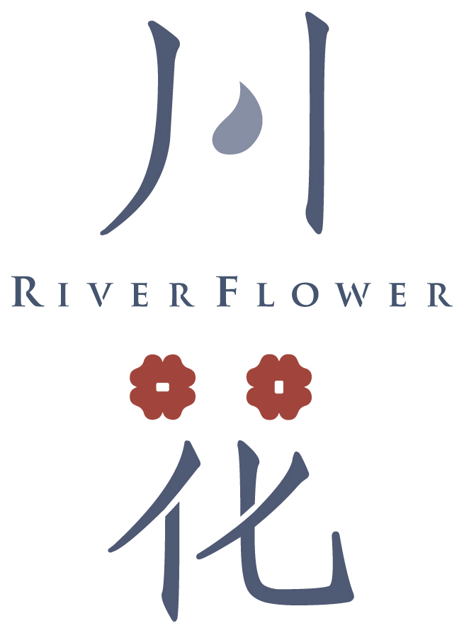
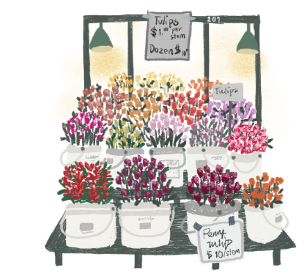

01滿天星
女裝廣告臉書投放
不是花錢買流量,是找到最對的那群人。精準投放,讓每一分廣告費都落在蛋黃層,真正有共鳴的她們。

川花是一條安靜的河。我們把內容、行銷與美感,一瓢一瓢澆進你的品牌裡——直到它開出自己的樣子。
不同於許多行銷顧問公司的一次性販售,我們集結實戰電商、廣告投放、靈敏嗅覺、獨特美感,為你打造最符合商品靈魂的口碑行銷——讓每一次曝光,都像一朵花,剛好開在對的人眼前。
絕不做廣撒花冤枉錢的行銷。我們致力挖掘每一個品牌的蛋黃層,把最核心、最有共鳴的受眾,慢慢向外種開。讓品牌被記住、被喜歡,然後,愛上。

六種花,同一件事:把你的品牌,種進對的人心裡。
不是花錢買流量,是找到最對的那群人。精準投放,讓每一分廣告費都落在蛋黃層,真正有共鳴的她們。
從策略到執行,我們最懂女性消費心理。讓品牌的靈魂穿透每個觸點,長出自己的根,留下深刻印記。
藝文品牌需要的不只是曝光,是讓對的家庭找到你。觸及那些真正會感動、帶孩子一再回來的受眾。
有靈魂、有理想,但還沒被聽見?我們幫你找對聽眾、優化內容,讓你的聲音從自說自話,變成真正的迴響。
從企業轉型、內容企劃到廣告轉換,串起每一個消費觸點。讓商品不只是販售,而是品牌被記住的靈魂至高點。
重新梳理品牌靈魂、受眾與溝通語言,建立一致的內容矩陣。讓老品牌長出新樣貌,也讓新品牌站穩自己的位置。
每一個品牌,都是我們蹲下來、聽完河聲之後,親手開出來的。
一種,是讓你的品牌開花;一種,是讓你的手,學會開一朵花。走進教室,空間會為你換一個樣子。
時長與收費規劃中 待確認
時長與收費規劃中 待確認
線上完成付款後,由川花官方 LINE 專人與你確認時間,不用來回寄信。
選定諮詢或花藝課,透過線上金流完成付款(信用卡)
付款完成後,頁面會確認你的訂單與金額
成功頁上有官方 LINE 連結,加入後回報姓名
由專人與你確認上課 / 諮詢時間,完成預約
先把規則說清楚,是我們表達尊重的方式。草案,待確認後生效
不管你是正在轉型的品牌,建立自己宇宙的創作者,
還是有靈魂、有美學,但還沒找到落地方式的人——
我們在找的,是靈魂最對的彼此。
課程報名、諮詢預約、合作洽談,都歡迎透過官方 LINE 找我們。
1. 本網站由「川花有限公司」(以下稱本公司)經營,提供品牌行銷諮詢與花藝教學課程之銷售與預約服務。
2. 消費者於本網站完成付款,即視為同意本服務條款與退款改期規則。
3. 課程與諮詢時段採預約制,付款完成後由官方 LINE 專人與消費者確認時段。
4. 本公司保留調整課程內容、時段與價格之權利;已成立之訂單不受調價影響。
5. 條款未盡事宜,依中華民國相關法令辦理。
1. 本公司於您報名課程或預約諮詢時,將蒐集姓名、電話、Email 等必要個人資料,僅用於訂單處理、課程通知與客服聯繫。
2. 您的個人資料不會提供予第三人,亦不會用於前述目的以外之用途;金流資料由合作之金流服務商依其資安標準處理,本公司不留存信用卡卡號。
3. 您可隨時透過客服信箱或官方 LINE 申請查詢、修改或刪除您的個人資料。
4. 本政策如有修訂,將公告於本網站。
推開門,空氣就不一樣了。這裡只做兩件事——
讓你的品牌開花,或讓你的手,學會開一朵花。
綠界金流審核通過後開放線上付款 綠界待串接
現可透過官方 LINE 預約
綠界金流審核通過後開放線上付款 綠界待串接
現可透過官方 LINE 報名
付款完成 → 成功頁 → 加入官方 LINE → 專人確認時段。看完整流程